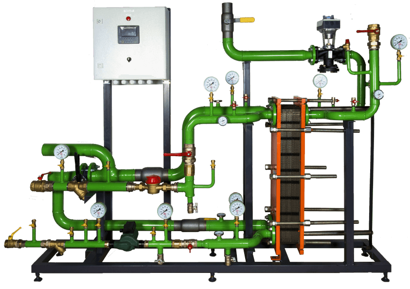

До 2020 года ООО "Термоблок" выпускал блочные тепловые установки для пищевой промышленности. С 2020 года было принято решение о запуске в производство блочных тепловых пунктов для жилично-коммунального хозяйства.
Проектирование тепловых пунктов (ИТП) – это комплекс инженерных работ, который включает в себя: проектирование тепловых пунктов; разработку проекта системы отопления, вентиляции и кондиционирования. Также может включать в себя проведение пуско-наладочных работ, обследование и контроль исправности оборудования. В результате выполнения вышеперечисленных работ заказчик получает готовую систему отопления и вентиляции, которая удовлетворяет всем необходимым требованиям.
В процессе проектирования разрабатывается проектная и рабочая документация, которая содержит чертежи, схемы, спецификации и ведомости. Проектная документация разрабатывается применительно к конкретным условиям строительства с учетом всех особенностей объекта.
Спрос на готовые решения в данной сфере растёт из года в год. Становится выгоднее заказывать тепловой пункт заводской готовности нежели собирать индивидуальный тепловой пункт на месте. Для целей запуска серийного производства тепловых пунктов, мы сократили время отработки запросов на тепловые узлы до двух дней. Также предлагаем изготовить проект и его оформить. Таким образом, благодаря совместной работе, в середине 2020 года были готовы принципиальные схемы на каждый узел: отопления, вентиляции и ГВС, автоматизированы методики, формулы, порядки расчета, коэффициенты и т.д. для правильного подбора оборудования.
Блочный тепловой пункт – это автоматизированная установка, предназначенная для передачи энергии, поступающей от котельной и ТЭЦ в систему отопления, в вентиляционные системы и ГВС-коммуникации.
Важно!Основным отличием наших блочных тепловых пунктов - пластинчатых разборный теплообменник нашего же производства.
Установка БТП повышает общую экономию теплоэнергии до 15%, дает возможность регулировать расход тепла на месте, автоматизирует процесс контроля: у оборудования есть тепловое реле, которое настраивает его таким образом, чтобы учитывать погодные условия, а также изменять режим работы в соответствии со временем суток.
Чтобы следить за работой БТП и проводить профилактические работы либо ремонт, требуется минимум персонала. При высокой производительности теплоэнергии данное оборудование относится к компактному: если взять тепловую нагрузку до 2 Гкал (гигакалорий), то БТП займет площадь примерно 20 кв. м, что вполне подходит под все имеющиеся подвальные сооружения.
Подробнее про блочные тепловые пункты